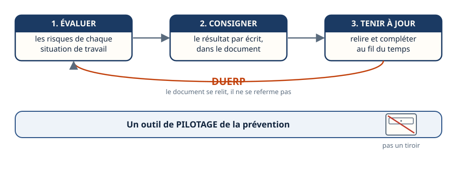
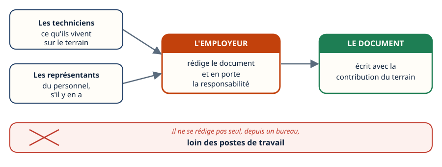
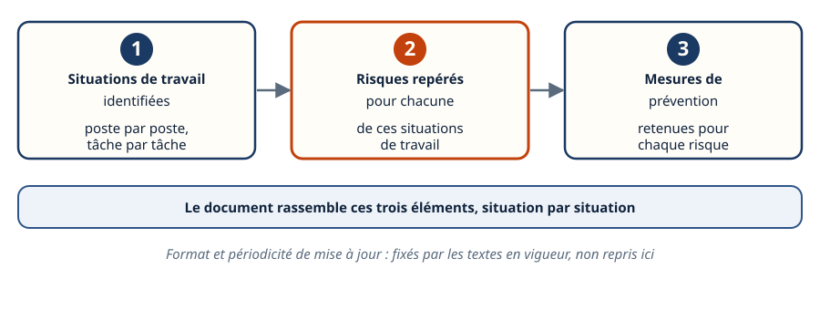
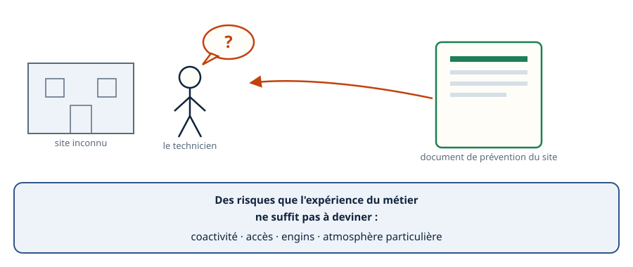
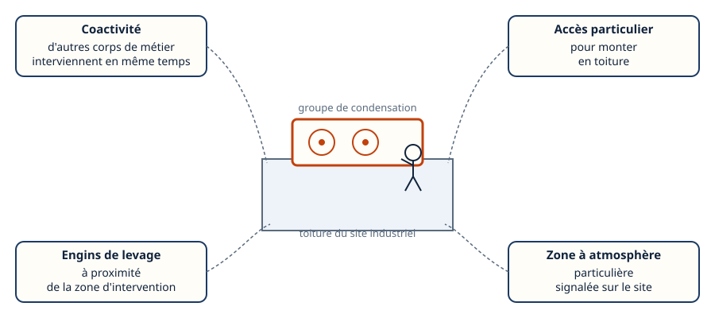
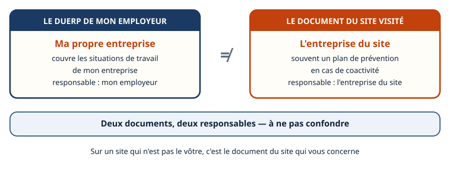
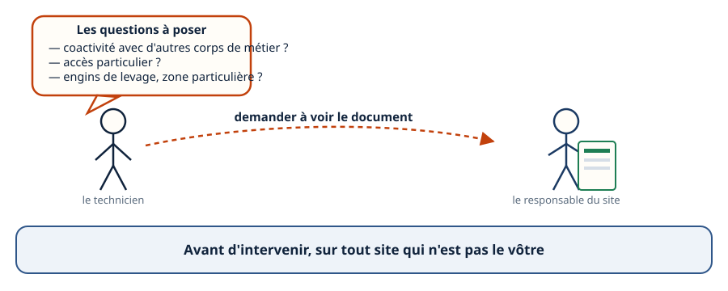
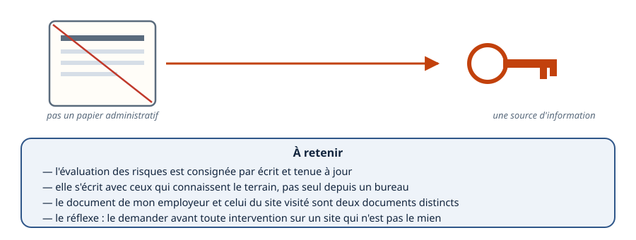

Mini-station commentée · 8 écrans et 4 questions · environ 10 minutes
Objectif
À la fin de la station, vous savez à quoi sert le document unique d'évaluation des risques professionnels, qui l'écrit et avec qui, ce qu'on y trouve, et pourquoi vous avez intérêt à le consulter — ou à en réclamer l'équivalent — avant d'intervenir sur un site qui n'est pas le vôtre.
Chaque écran peut être expliqué à voix haute : le bouton « Écouter » commente ce que vous voyez. Rien n'est dit qui ne soit aussi écrit.
1 / 12
Écran 1 sur 8
Un document qui pilote, pas qui dort
L'employeur doit évaluer les risques de chaque situation de travail dans l'entreprise, et consigner ce résultat par écrit dans un document : le document unique d'évaluation des risques professionnels (DUERP).
Ce n'est pas un papier rangé dans un tiroir. C'est un outil de pilotage de la prévention, qui se tient à jour au fil des situations de travail rencontrées.

Le document se relit, il ne se referme pas.
Écran 2 sur 8
Qui l'écrit, et avec qui
C'est l'employeur qui rédige le document et en porte la responsabilité.
Mais il ne l'écrit pas seul, depuis un bureau, loin des postes de travail : il s'appuie sur ceux qui connaissent le terrain — les techniciens eux-mêmes, et les représentants du personnel quand il y en a.

Il ne se rédige pas seul, loin des postes de travail.
Écran 3 sur 8
Ce qu'on y trouve concrètement
Le document rassemble, pour chaque situation de travail rencontrée dans l'entreprise :
les situations de travail identifiées, poste par poste ;
les risques repérés pour chacune d'elles ;
les mesures de prévention retenues.
Le format exact et la périodicité de mise à jour dépendent des textes en vigueur — non repris ici.

Trois colonnes, un même document.
Écran 4 sur 8
Pourquoi un technicien a intérêt à le lire
Avant d'intervenir sur un site qui n'est pas le sien, le document de prévention du site renseigne sur des risques que le technicien ne peut pas deviner seul, en arrivant avec sa seule expérience du métier.

Des risques propres au site, pas au métier.
Écran 5 sur 8
Exemple : une recharge en toiture
Avant une intervention de recharge de fluide sur un groupe de condensation en toiture d'un site industriel, le document de prévention du site peut signaler :
une coactivité avec d'autres corps de métier ;
un accès particulier pour monter en toiture ;
des engins de levage à proximité ;
une zone à atmosphère particulière.

Quatre risques propres au site, invisibles depuis le sol.
Écran 6 sur 8
Deux documents, deux responsables
Le DUERP de votre propre employeur couvre votre entreprise. Le site où vous intervenez a le sien, souvent formalisé, en cas de coactivité avec une entreprise extérieure, par un document de prévention propre au chantier.
Deux documents, deux responsables — à ne pas confondre.

Deux documents, deux responsables.
Écran 7 sur 8
Le réflexe avant un site inconnu
Sur un site que vous ne connaissez pas, demandez à voir le document, ou posez au responsable du site les questions qu'il contiendrait : coactivité, accès, engins présents, zones particulières.

Demander, avant d'intervenir.
Écran 8 sur 8
Bilan et le réflexe
L'évaluation des risques est consignée par écrit et tenue à jour.
Elle s'écrit avec ceux qui connaissent le terrain, pas seul depuis un bureau.
Le DUERP de votre employeur et le document du site visité sont deux documents distincts.
Avant un site inconnu, vous avez intérêt à le consulter — ou à en poser les questions.
Le réflexe : demander le document avant d'intervenir sur un site qui n'est pas le vôtre.

Une source d'information, pas un papier administratif.
Question 1 sur 4
À quoi sert vraiment le DUERP ?
Rappel de l'écran 1 — un document qui pilote.
Question 2 sur 4
Qui écrit le document ?
Rappel de l'écran 2 — pas rédigé seul.
Question 3 sur 4
Avant une recharge en toiture, que peut signaler le document du site ?
Rappel de l'écran 5 — des risques propres au site.
Question 4 sur 4
Un technicien intervient chez un client : quel document le concerne ?
Rappel de l'écran 6 — deux documents, deux responsables.
Les correspondances de la station
L'habilitation (sous-ligne Électrique) — la règle d'un côté, le geste protégé de l'autre.
Cette station est en préparation sur le plan du réseau.